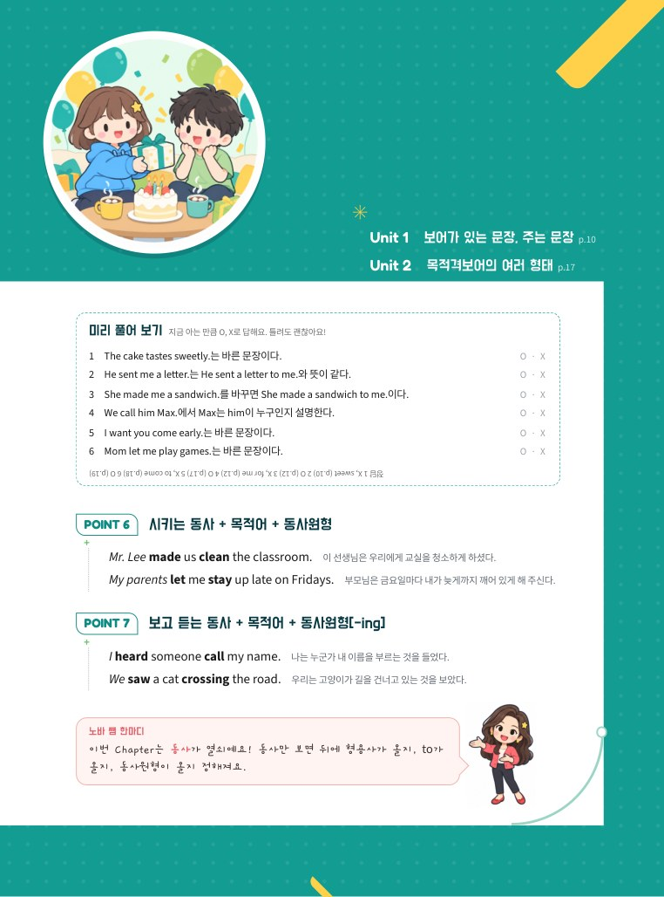
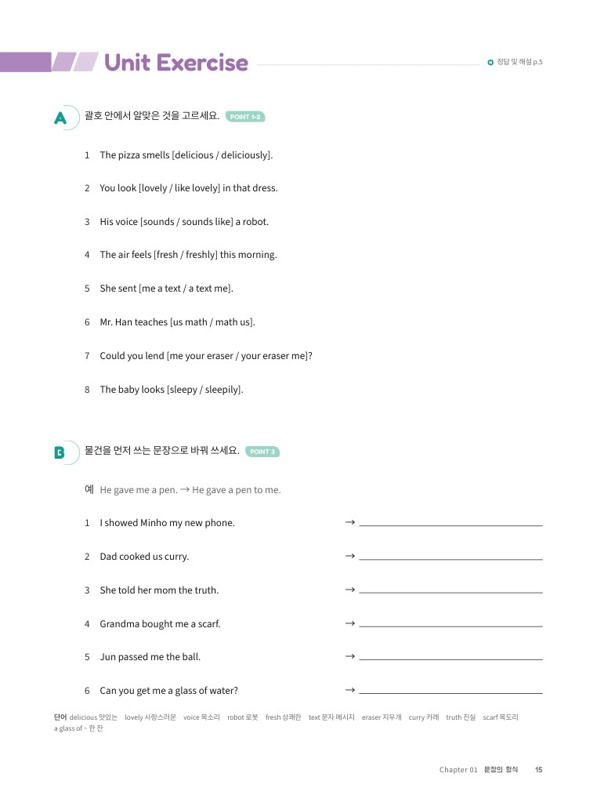
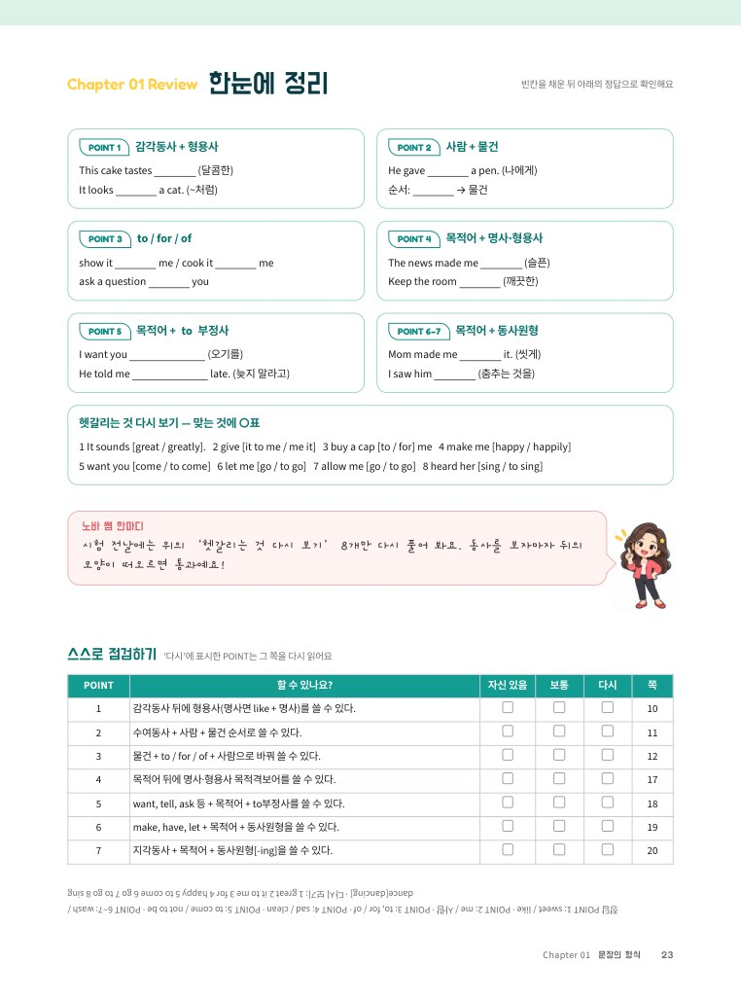
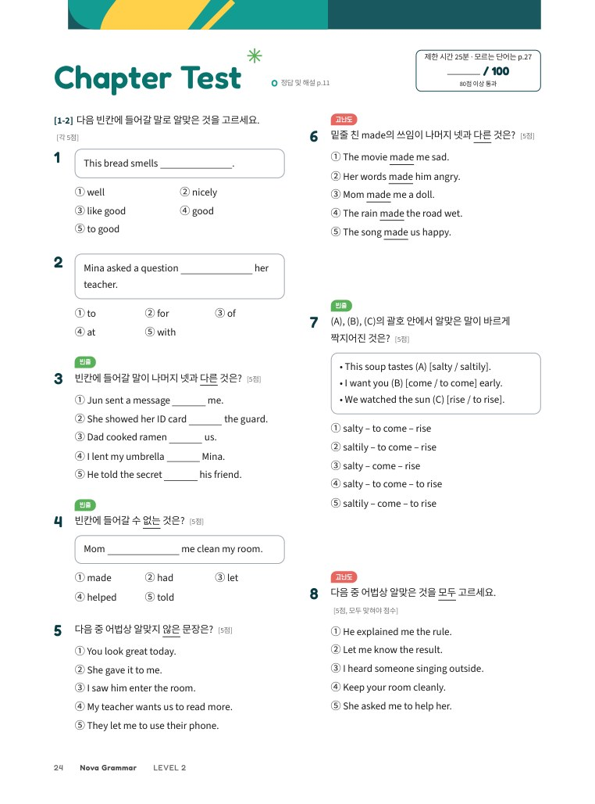
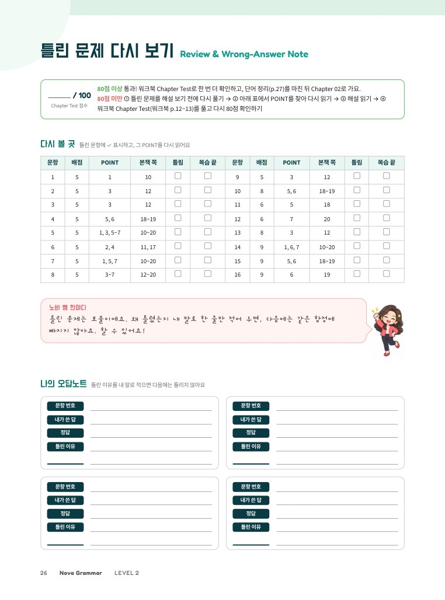
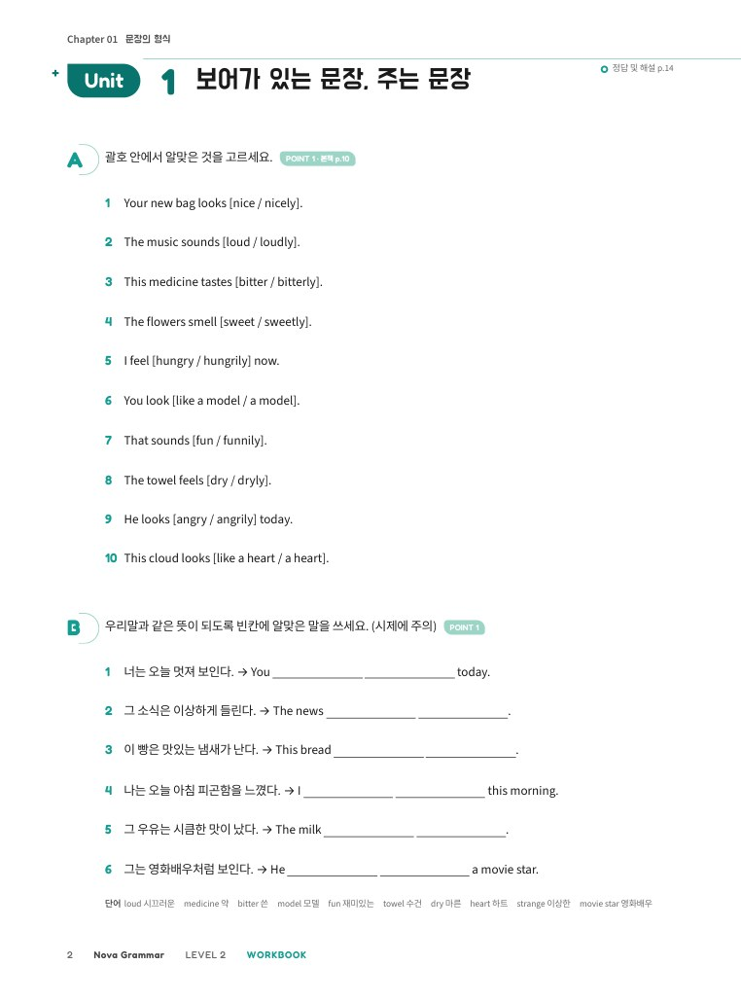
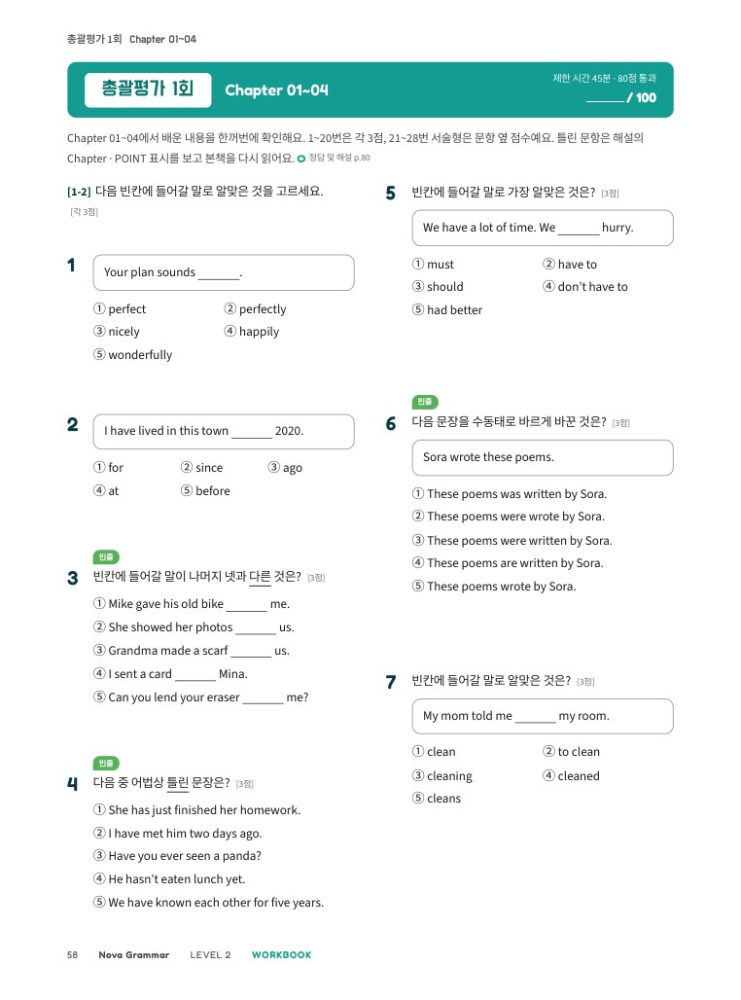

Nova Grammar
혼자서도 끝까지 하는 중2 영문법

머리말
Preface1권을 마치고 2권을 펼친 여러분에게
2권에서는 현재완료, 수동태, to부정사·동명사·분사, 관계대명사처럼 중학교 영어의 큰 산들을 만나요. 문장은 길어지지만 겁먹을 필요는 없어요. 결국 1권에서 익힌 〈주어 + 동사〉 뼈대에 덩어리가 하나씩 붙는 것뿐이니까요.
이번 권부터는 노바와 노바 쌤이 함께해요. 노바는 여러분처럼 혼자 공부하는 친구예요. 노바 쌤은 헷갈리기 쉬운 곳마다 한마디씩 짚어 주는 선생님이에요. POINT 박스 아래 왼쪽 칸의 ‘더 알아보기’는 본문을 다 이해한 뒤에 읽는 +α 설명이에요.
공부하는 방법은 1권과 같아요. 규칙 한 줄을 읽고, 해석이 붙은 예문을 소리 내어 읽고, 문제를 푼 뒤 통과 기준을 확인해요. 정답 및 해설에는 정답이 왜 맞는지와 다른 선택지가 왜 틀렸는지를 모두 적었어요. 막히면 해설이 선생님이 되어 줄 거예요.
하루 30분, 한 Chapter를 일주일 남짓 천천히 따라가요. 마지막 장을 넘기는 날에는 길고 어려워 보이던 문장이 덩어리로 끊어져 읽히기 시작할 거예요. 2권도 끝까지 함께할게요.
NOVA ENGLISH

차례
Contents1권 핵심 다시 보기 p.6~7
구성과 특징
How to Use This Book한 Chapter는 도입 → Unit(개념 + Unit Exercise) → 정리 → Chapter Test → 다시 보기 순서로 이어져요. 1권과 같은 흐름이라 바로 시작할 수 있어요.









 노바 쌤
노바 쌤혼자서도 끝까지! Nova Grammar 공부법
이 책은 선생님 설명 없이 혼자 공부할 수 있게 만들었어요. 아래 순서대로 공부하고, 통과 기준을 넘으면 다음 단계로 가요. 하루 30분 안팎으로, 진도표(p.5)의 계획을 따라가면 알맞아요.
- 학습 목표와 미리 풀어 보기 — Chapter 첫 쪽에서 무엇을 배울지 읽고, O/X 문제로 지금 아는 것을 확인해요.
- POINT 읽기 — 규칙 한 줄 → 설명 → 예문 순서로 읽어요. 예문은 소리 내어 읽고 해석과 맞춰 봐요. 1권 내용이 생각나지 않으면 ☞ 표시를 따라가거나 p.6~7을 펼쳐요.
- 더 알아보기 — POINT 박스 아래 왼쪽 칸은 본문을 이해한 다음에 읽어요. 처음 읽을 때는 건너뛰어도 괜찮아요.
- check up — 바로 풀고 바로 채점해요(정답 및 해설). 틀리면 그 POINT를 다시 읽고 다시 풀어요.
- Unit Exercise — 맞은 개수를 적고 통과 기준을 확인해요.
- 한눈에 정리 → Chapter Test — 빈칸을 채우며 정리한 뒤, 시험처럼 25분 안에 풀고 100점 만점으로 채점해요.
- 오답노트와 다시 볼 곳 — 틀린 문항이 어느 POINT인지 표에서 찾아 복습하고, 오답노트에 이유를 적어요.
- 워크북으로 한 번 더 연습하고, 단어 정리로 마무리해요. 4개 Chapter마다 총괄평가를 풀어요.
다시 기준보다 낮으면: ① 틀린 문제를 해설 보기 전에 한 번 더 풀기 → ② 문제 옆 POINT 표시를 보고 그 POINT를 다시 읽기 → ③ 그래도 모르면 해설 읽기 → ④ 워크북의 같은 Unit 풀기
| 과거분사 (p.p.) | 동사의 세 번째 모양 go – went – gone, make – made – made (☞ 권말부록 p.259) |
|---|---|
| 현재완료 · 수동태 | 〈have + p.p.〉 과거의 일이 지금까지 이어짐 · 〈be + p.p.〉 주어가 동작을 받음 |
| 준동사 | 동사가 다른 품사처럼 쓰이는 to부정사·동명사·분사를 함께 부르는 말 |
| 절 · 선행사 | 〈주어 + 동사〉가 있는 덩어리 · 관계대명사절의 꾸밈을 받는 앞의 명사 |
나의 학습 진도표
My Study PlanUnit을 끝낼 때마다 □에 표시하고 점수를 적어요. 통과 칸에 표시가 쌓이면 실력도 쌓여요.
| Chapter | Unit 1 | Unit 2 | Unit 3 | Unit 4 | 본책 Test | 워크북 Test | 통과 | 시작한 날 | 끝낸 날 |
|---|---|---|---|---|---|---|---|---|---|
| 01 문장의 형식 | — | — | /100 | /100 | |||||
| 02 시제 | — | /100 | /100 | ||||||
| 03 조동사 | — | /100 | /100 | ||||||
| 04 수동태 | — | — | /100 | /100 | |||||
| 총괄평가 1회 (Ch 01~04) | 워크북 총괄평가 | /100 | |||||||
| 05 to부정사 | /100 | /100 | |||||||
| 06 동명사 | — | — | /100 | /100 | |||||
| 07 분사 | — | — | /100 | /100 | |||||
| 08 대명사 | — | /100 | /100 | ||||||
| 총괄평가 2회 (Ch 05~08) | 워크북 총괄평가 | /100 | |||||||
| 09 형용사와 부사 | — | — | /100 | /100 | |||||
| 10 비교 | — | — | /100 | /100 | |||||
| 11 접속사 | — | /100 | /100 | ||||||
| 12 관계대명사 | — | /100 | /100 | ||||||
| 총괄평가 3회 (Ch 09~12) | 워크북 총괄평가 | /100 | |||||||
| 날 | 할 일 | 쪽 | 완료 |
|---|---|---|---|
| 1일 | 1권 핵심 다시 보기 · 미리 풀어 보기 · POINT 1~2 | p.6~11 | |
| 2일 | POINT 3 · 영작 집중 · Unit Exercise (Unit 1) | p.12~16 | |
| 3일 | 워크북 Unit 1 | 워크북 p.2~5 | |
| 4일 | POINT 4~7 · Unit Exercise (Unit 2) | p.17~22 | |
| 5일 | 워크북 Unit 2 · 서술형 집중 | 워크북 p.6~11 | |
| 6일 | 한눈에 정리 · Chapter Test · 오답노트 | p.23~26 | |
| 7일 | 워크북 Chapter Test · 단어 정리 | 워크북 p.12~13 · 본책 p.27 |
1권 핵심 다시 보기 ① 문장의 뼈대와 자리
Review2권의 문법은 거의 다 ‘어느 자리에 무엇이 들어가나’의 이야기예요. 단어를 나누는 방법은 두 가지예요. 단어 자체의 종류는 품사, 문장 속에서 맡은 역할은 문장 성분이라고 해요.
| 주어 | ‘~은, ~는, ~이, ~가’ 자리 → 명사·대명사 Jun plays soccer. / He plays soccer. |
|---|---|
| 동사 | ‘~하다, ~이다’ 자리 → 동사만. 영어 문장에는 동사가 꼭 하나 있어요. Jun plays soccer. |
| 목적어 | ‘~을, ~를’ 자리 → 명사·대명사 Jun plays soccer. |
| 보어 | 주어나 목적어를 설명하는 자리 → 명사·형용사 Jun is tall. / The news made me happy. |
| 꾸밈말 | 명사를 꾸미면 형용사, 그 밖의 것(동사·형용사·문장)을 꾸미면 부사. 부사는 빼도 문장이 돼요. a tall boy / He runs fast. |
| 주어 + 동사 | The baby sleeps. |
|---|---|
| + 보어 | The soup smells good. |
| + 목적어 | I like music. |
| + ~에게 + …을 | Mom gave me a book. |
| + 목적어 + 목적격보어 | The song makes me happy. |
| 명사 자리 | to부정사·동명사·that절 To swim is fun. / I enjoy swimming. / I think that he is kind. (☞ Ch 05·06·11) |
|---|---|
| 형용사 자리 | to부정사·분사·관계대명사절이 명사 뒤에서 꾸며요 something to eat / the boy playing soccer / a friend who lives in Jeju (☞ Ch 05·07·12) |
| 부사 자리 | to부정사·부사절이 이유·목적·때를 덧붙여요 I went out to buy milk. / When I got home, … (☞ Ch 05·11) |
1권 핵심 다시 보기 ② 동사의 모양과 시제
2권의 현재완료·수동태·분사는 모두 1권에서 배운 동사의 모양 위에 쌓여요. 아래 표가 바로 나오지 않으면 1권의 그 Chapter를 한 번 훑고 시작해요.
| 현재 | I am / you are / he is · 일반동사는 3인칭 단수 주어에 -s, -es She plays. / He watches. |
|---|---|
| 과거 | was / were · 일반동사 -ed 또는 불규칙 played / went / made |
| 부정문 | be + not · don’t / doesn’t / didn’t + 동사원형 She doesn’t like it. |
| 의문문 | Be + 주어 ~? · Do / Does / Did + 주어 + 동사원형 ~? Did you see it? |
| 진행형 | be + -ing ‘~하고 있다’ I am reading. / I was reading. |
|---|---|
| 미래 | will + 동사원형 / be going to + 동사원형 It will rain. / I’m going to visit him. |
| 조동사 | can, may, must, should + 동사원형 (3인칭 단수라도 -s ×) He can swim. |